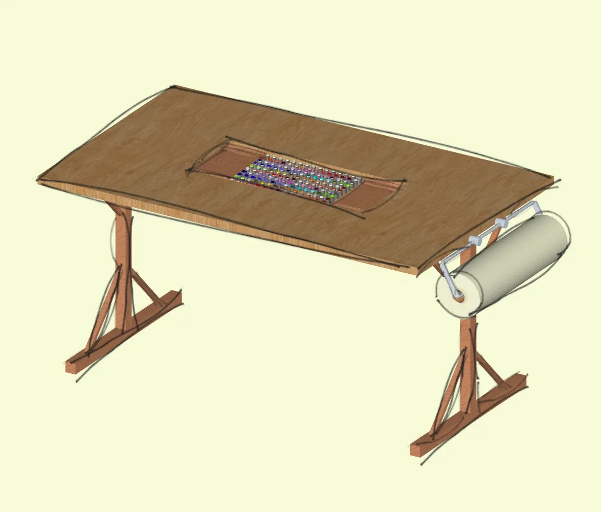
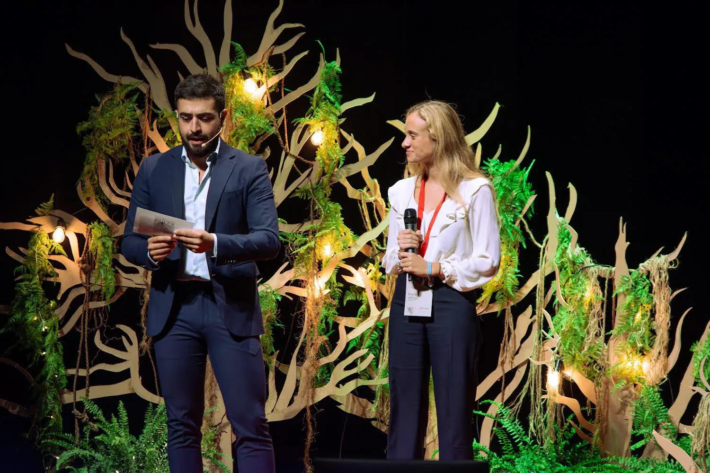
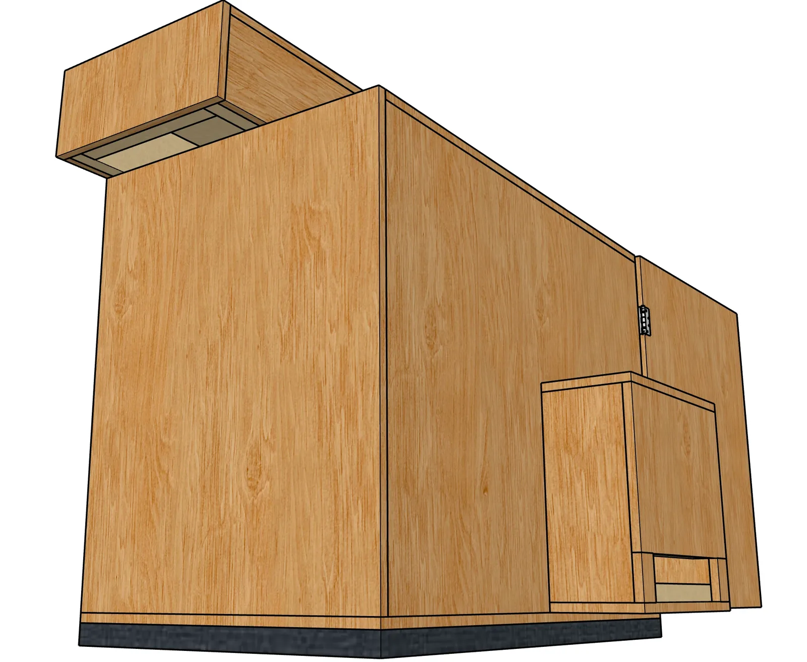

Bespoke Woodwork
Three built projects shaped through craft, collaboration and practical problem-solving in Granada.
Working alongside the team at El Secadero de Reviverdes shifted my design practice towards making. These projects moved between furniture, live-event scenography and a tightly constrained technical problem. Each began with a particular use, was developed directly through material tests and fabrication, and was adjusted through the realities of the workshop or site.
Together they show how hands-on construction can become a form of spatial research, turning drawings and ideas into useful, inhabitable and atmospheric outcomes.
- Location
- Granada, ES
- Year
- 2025
- Type
- Furniture · Set Design · Applied Design
- With
- El Secadero de Reviverdes

01Workshop Drawing Table
Bespoke furniture for thinking, sketching and making.

02TEDxGranada Stage
A live-event environment shaped around the theme of Roots.

03Sound Isolation Box
A ventilated enclosure designed to reduce compressor noise.